50代からのお金の育て方
映像の世界観と編集方法｜改訂2：暮らしを一つに決めつけない
2026年9月19日。新しい5案・見本20枚。前回のA〜Eと区別するため、今回はF〜Jで表示しています。
元の企画書 ／ 前回の5案・20枚 ／ 今回の20枚を一括保存
今回、広げたこと
前回は木の机・手帖・お茶・書斎・生成り色が重なり、「クラシックな大人の暮らし」に寄っていました。今回は 写真、コミック、文字、平面グラフィック、立体表現まで離して比較します。
50代女性という軸を保ち、会社員・パート・自営業、家族と暮らす人・一人で暮らす人、仕事や趣味を続けたい人にも、自分の悩みを重ねられる画面を目指します。これはターゲットの実態を調査で断定したものではなく、暮らしを限定しないための制作方針です。
こよみは一つの架空ケースです。こよみと同じ家族構成・住まい・服装・資産額の人だけに向けたチャンネルにはしません。働く日、楽しむ日、家族を気にかける日、休む日を扱います。都市生活や活動的な趣味も「全員の理想」にせず、今回の見本の一例として使います。
映画風の色調や豪華な撮影を前提にせず、落ち着いた声に合う見せ方の幅を広げました。文字と数字はどの案でも読みやすく固定し、語り手は先生ではなく一緒に考える人です。
先に、新しい5案を見る
同じ冒頭の問いを5つの表現で比較できます。画像を押すと拡大します。各案の4場面はこの下にあります。
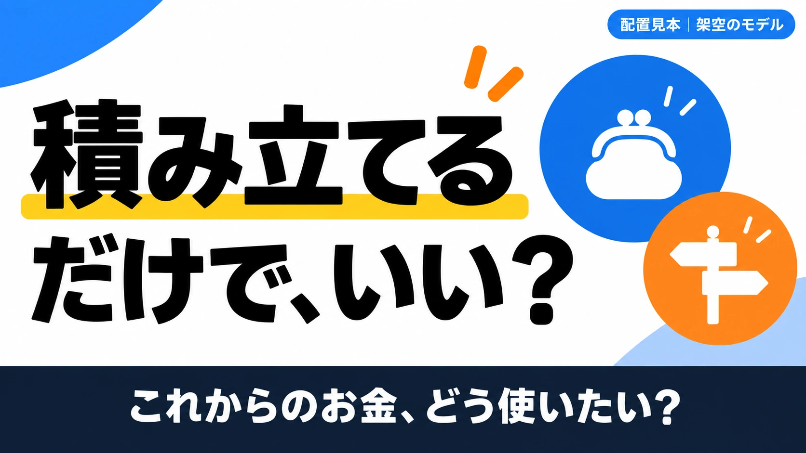
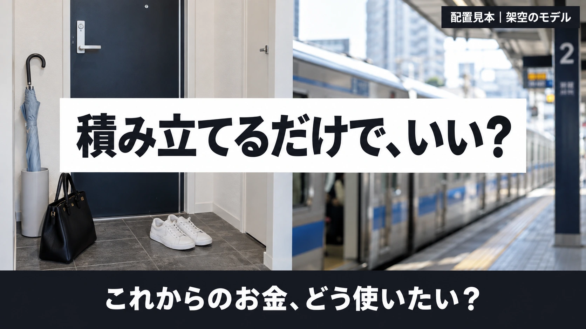
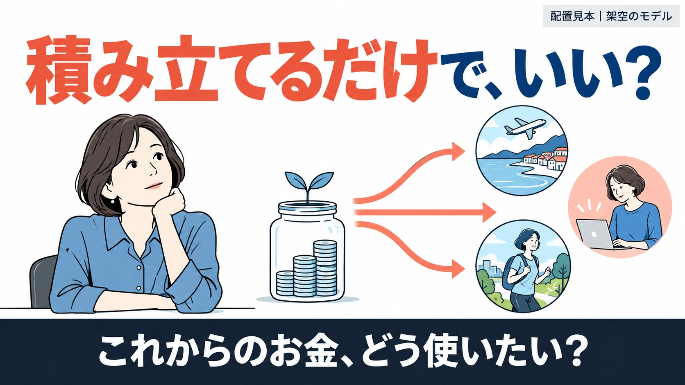
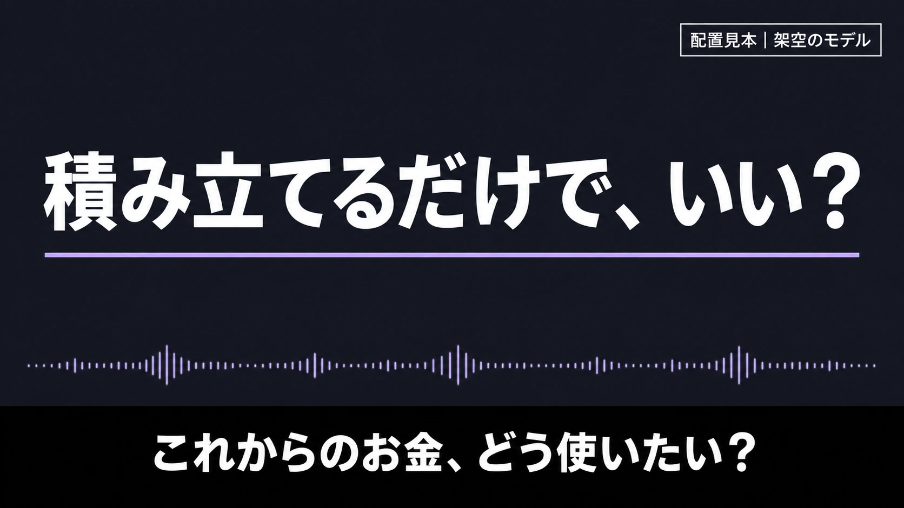
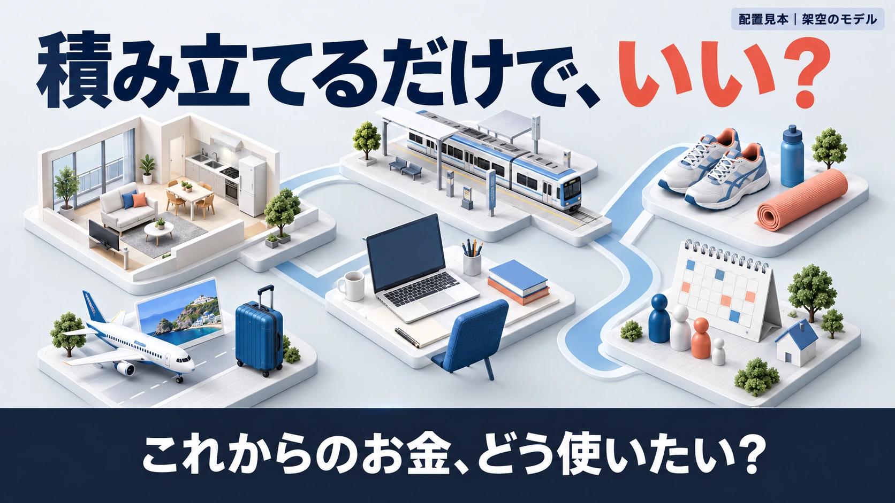
| 案 | 表現の中心 | 暮らしを限定しにくい理由 | 制作の負担 | 今回の位置づけ |
|---|---|---|---|---|
| F 今の暮らしの情報番組 | 白地・大きな文字・明快な平面図形 | 特定の部屋や住まいを背景にしない | 小〜中 | 説明の比較基準 |
| G ふつうの毎日ドキュメント | 現代の日常をそのまま捉えた写真・動画 | 家だけでなく仕事・移動・趣味へ場面を広げる | 中 | 実写なら第一候補 |
| H 生活のコミックエッセイ | 簡潔な線画と、日常の小さな場面 | 住まいや家族を柔軟に描け、特定の俳優に依存しない | 中 | 今回の試作第一候補 |
| I ことばのラジオ | 余白・タイポグラフィ・短い問い | 容姿・家具・家庭像を視聴者へ押し付けない | 小〜中 | 声を主役にする候補 |
| J 暮らしの立体マップ | 立体の小さな場面と関係図 | 仕事・生活・趣味を同じ大きさで扱える | 初回大・継続中 | 視覚的な差別化候補 |
推薦はH「生活のコミックエッセイ」の短い試作。 こよみの迷いを生活の場面にでき、介護・相続・働き方まで同じ絵柄で広げられます。実写を好む場合はG、声と問いを重視する場合はIも有力です。前回のB「資産手帖」を主力にする推薦は、今回見直しました。
見やすさと継続性の判断は制作上の仮説です。50代視聴者の評価や再生数で実証された順位ではありません。派手さを増すだけで若返らせるのではなく、普通の仕事・支出・楽しみが登場することを重視します。
F｜今の暮らしの情報番組
感じてほしいこと：「難しい話も、自分に関係することから理解できる」。特定の暮らしを背景に置かず、今の悩みを大きな言葉で示す案です。
配色・文字・質感： 白と青に少量のオレンジ。太めのゴシック、単純な平面図形。紙や木の質感、映画風の光は使いません。余白と強弱で整理し、銀行の広告のような成功イメージにしません。
映像と情報： 冒頭・実践は静止画、金額は平面図解。仕事や移動の話に入るときだけ短い実写を挿入します。講師やアバターは常設せず、右上の章名とこよみの問いでつなぎます。名前表示は冒頭・締め各1回が目安。
継続制作： 負担は小〜中。問い・2項目比較・3項目整理を共通化できます。情報番組の権威を強く出すと先生の位置になるので、声は迷いや選んだ理由を残します。
向く話： NISAの次の一手、金利、制度変更、月次の数字。弱い話： 家族への複雑な気持ち。短い生活場面を補います。素材候補はM01・M03・M08。
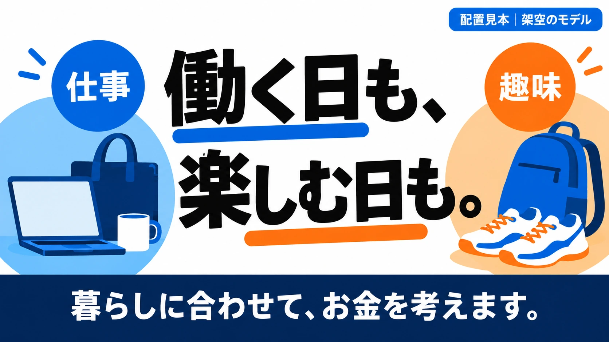
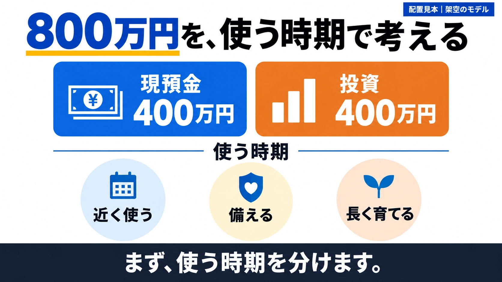
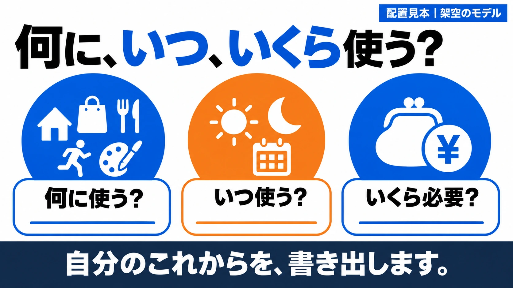
G｜ふつうの毎日ドキュメント
感じてほしいこと：「こういう毎日の中で、お金のことを考えている」。通勤や買い物、仕事の道具、休みの日の準備を写します。贅沢な住まいも、整いすぎた生活も前提にしません。
配色・文字・質感： 自然な色の写真、白い文字面、黒いゴシック。普通の昼光。青や赤の生活用品が少し入る程度で、映像全体をベージュや夕景色に染めません。実写の背景へ長文を直接重ねません。
映像と情報： 歩く・働くなどの動作は動画、立ち止まる問いは写真。数字に入ったら無地の面を大きく出して静止。実在の人物をこよみ本人とは扱わず、顔出し撮影も不要。語り手の姿は出さず、名前を冒頭に添える程度。
継続制作： 中。毎回違う家を同じ自宅として見せず、一般的な生活の情景として使います。働く・出かける・家で過ごす素材を少数ずつ持つと継続しやすくなります。
向く話： 働き方、今の楽しみ、家計、家族との距離。弱い話： 相続の分岐や制度の細則。図解に切り替えます。素材候補はM08・M09・M10。海外の街を日本の本人の日常と偽らないこと。
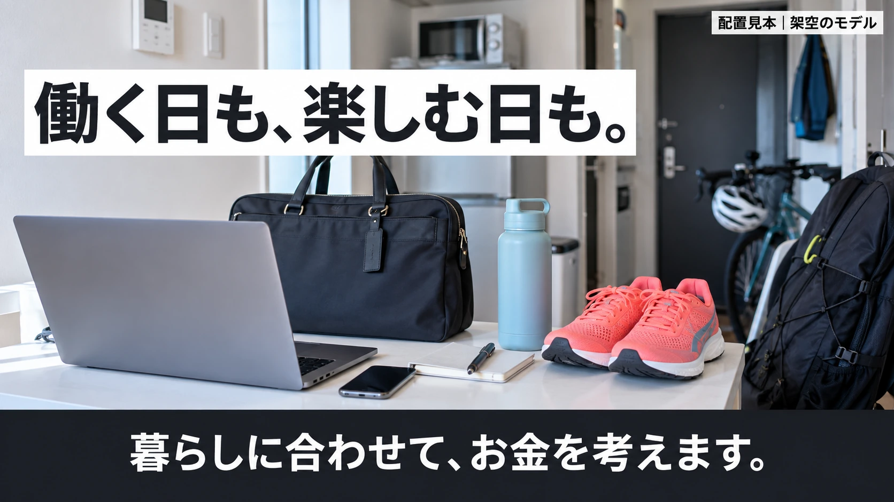
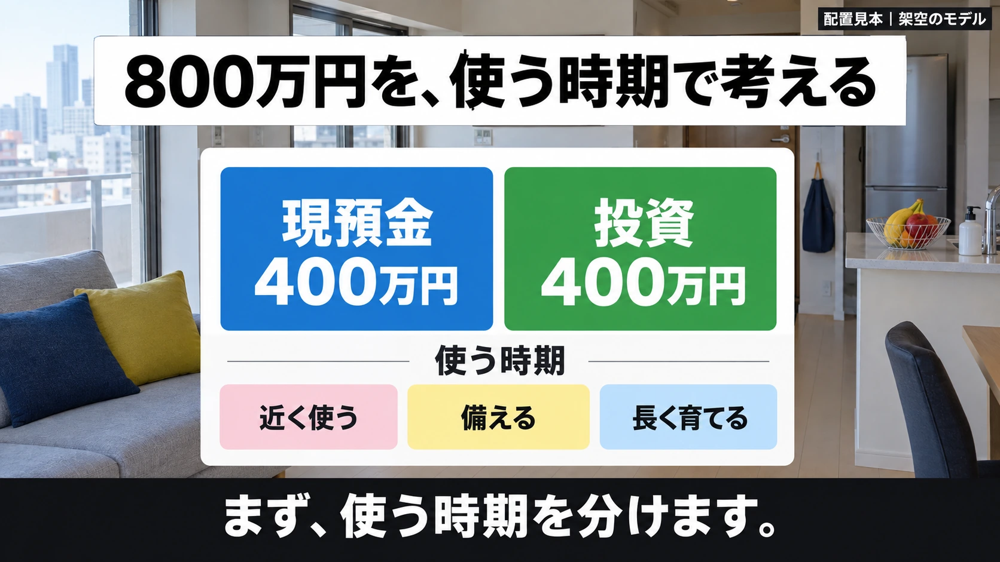
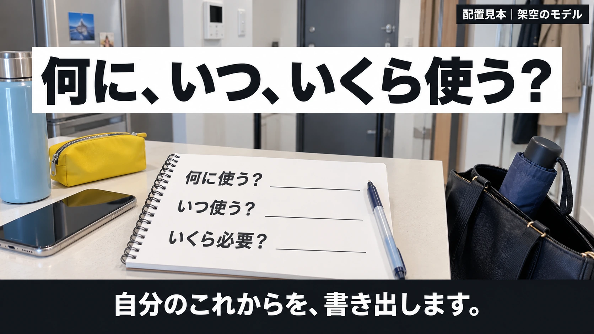
H｜生活のコミックエッセイ
感じてほしいこと：「私も、こんなことで迷う」。通勤の帰り、休日の予定、親からの連絡など、小さな場面からお金の話へ入ります。感情を語れることが、一般的な金融解説との差になります。
配色・文字・質感： 白地に簡潔な墨色の線、コーラルと水色。現代的なコミックのコマを使い、手帖や古い絵本には寄せません。文字は読みやすいゴシック。1画面は原則1〜2場面、読み物として吹き出しを詰め込みません。
映像と情報： 生活の静止画を中心に、視線・小物・コマを段階表示。動かすのは話の変化に必要な箇所だけ。数字は平面の箱に切り替えます。こよみの絵は導入と気づきに登場し、数字の画面では小さくするか退場。説明する口パクアバターにはしません。
継続制作： 中。表情・服装・背景の部品を揃える初期作業が必要。見本の人物は仮の絵柄で、正式な外見設定や、あのん本人の似顔絵ではありません。外見を確定せず、手元や後ろ姿中心にもできます。
向く話： 積立の迷い、介護、相続、家族会議、おひとりさまの備え。弱い話： 情報量の多い比較。コマを減らして図解を広く取ります。素材候補M01・M08・M10は、実写を挟む場合だけの補助。毎回必須にしません。
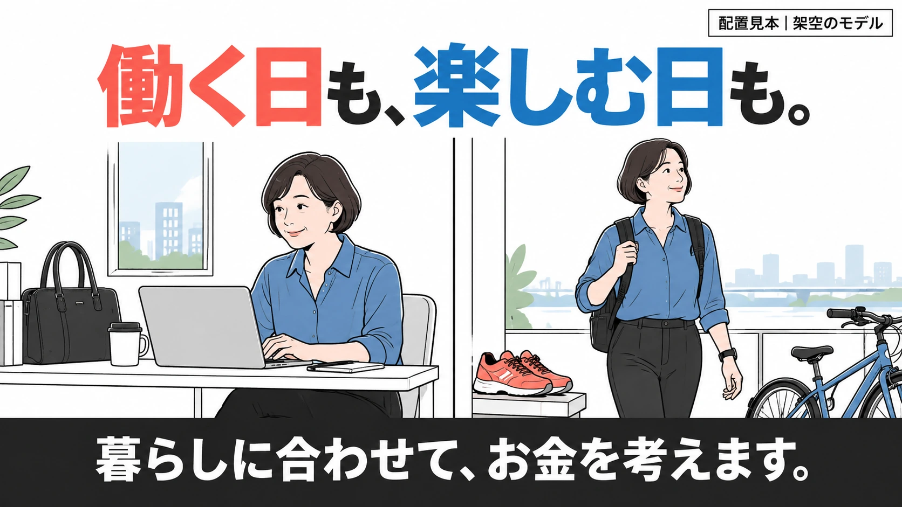
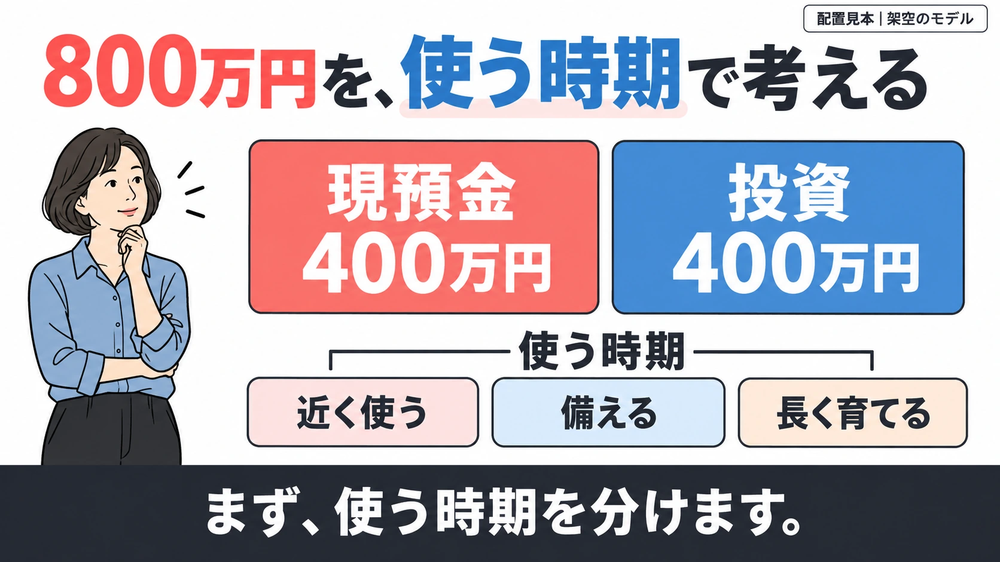
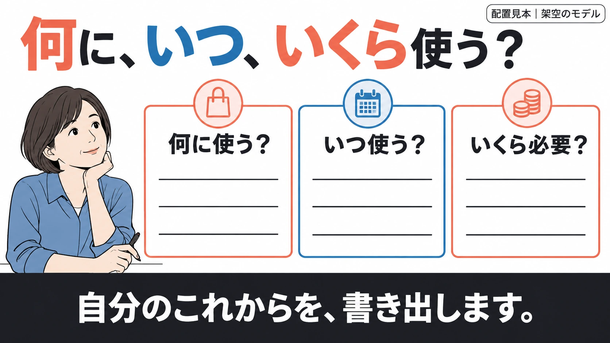
I｜ことばのラジオ
感じてほしいこと：「自分の中の言葉を、代わりに言ってくれる」。暮らしの好みが分かれる写真より、問いと声で入る案です。「増やしたい」「でも今も使いたい」のような迷いを短い言葉で扱います。
配色・文字・質感： 濃いチャコール地に白いゴシック、細いラベンダーの線。余白と短い言葉が画面の中心です。住宅・家具・人物写真は常設しません。背景は平らな色面で、映画風の暗い部屋にはせず、点滅や激しい波形も使いません。
映像と情報： 問いは文字の静止画、ナレーションの区切りで語句を入れ替える。数値は大きな2列の図解。実写は、抽象的な話が続くときに章間で数秒だけ。アバターなしで成立し、名前は冒頭・締めだけ。波形を常時動かす必要はありません。
継続制作： 小〜中。文字のテンプレートを共通化しやすい一方、毎回の言葉選びが重要です。見出しと全文字幕を同じ長文にすると重複するため、上は問い、下は発話に役割を分けます。
向く話： 損への怖さ、使う罪悪感、積立の迷い、価値観。弱い話： 長い手順や複雑な関係。別の図解へ切り替えます。補助素材候補M01・M02・M10。実写を使わない回も成立します。
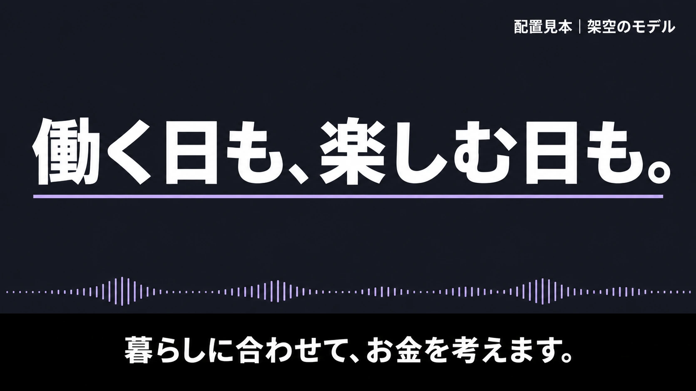
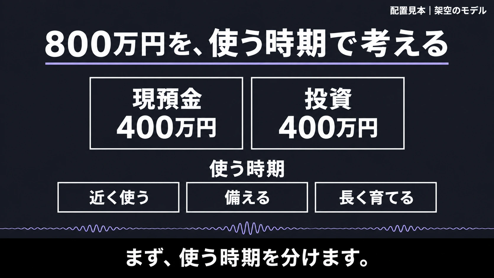
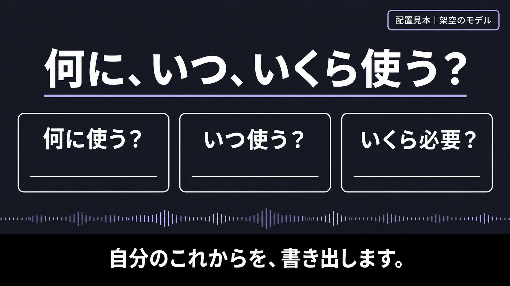
J｜暮らしの立体マップ
感じてほしいこと：「お金の話が、自分の生活全体につながっている」。家、仕事、移動、趣味、家族への備えを小さな立体の場面として並べます。場面ごとの関係を見せる案です。
配色・文字・質感： 白いマットな立体、薄いグレーの背景、青とコーラル。斜め上から見た模型の構図。数字と文字は手前の平面に置き、立体物の側面に書いて歪ませません。光沢の強い玩具や可愛い人形には寄せません。
映像と情報： 暮らしの全体は立体静止画。該当する場面を順に明るくするか、背景だけゆっくり寄る。数字は平面図解へ。実写を入れるなら、模型が示す移動や趣味の場面へ短く切り替えます。常設の人物・アバターなし。語り手の名前は冒頭に小さく。
継続制作： 初回は大、以後は中。同じ視点・光・縮尺を保つ部品集が必要です。初回から3Dアニメーションを発注する必要はなく、静止画と段階表示で試します。
向く話： 生活費の配分、介護と仕事、働く日数、暮らしの選択肢。弱い話： 個人の深い後悔や繊細な会話。声と余白を重視する別画面を挟みます。素材候補M03・M09・M10。
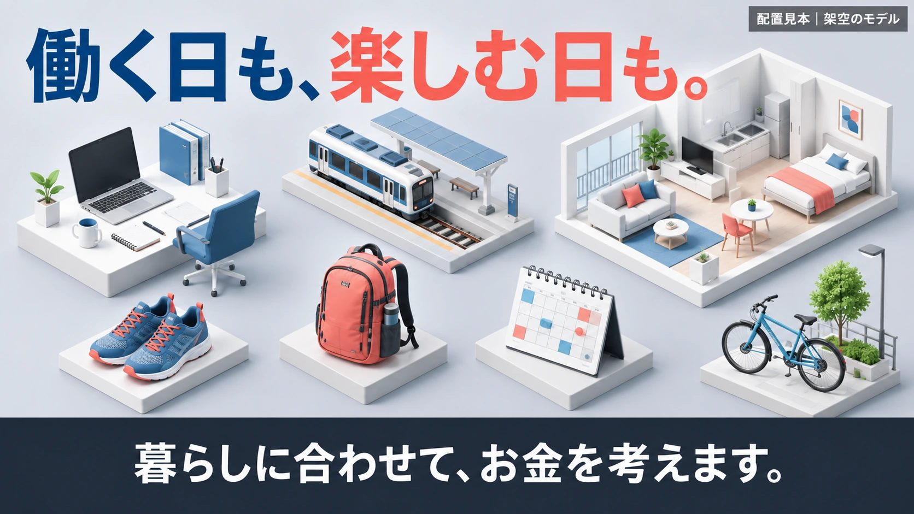
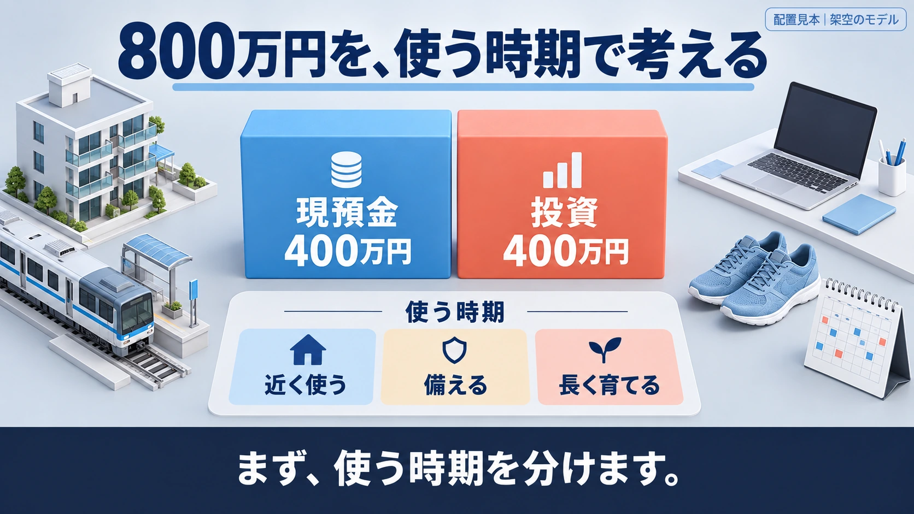
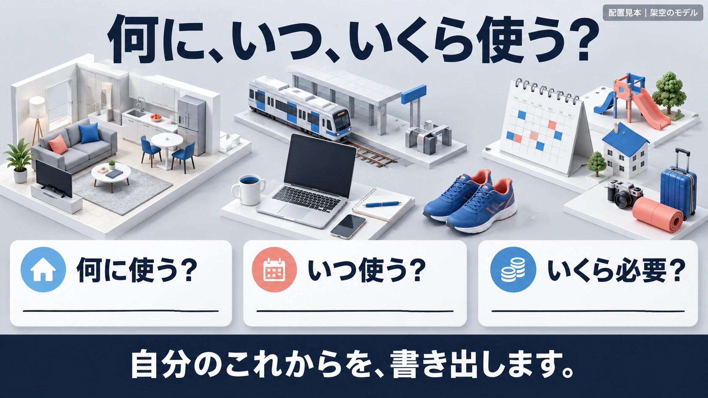
変えない方針と、今回の提案
| 区分 | 内容 |
|---|---|
| 既定 | 主に50代女性。NISA等を続けてきたが、この先の積立・使い方・60代以降に迷う人 |
| 既定 | 投資、働き方、介護、相続、家族の支出までつなぐ。声は「あのん」、人物は「こよみ」。一緒に考える立ち位置 |
| 既定 | こよみは52歳の会社員、夫と成人した子どもがいる架空の女性。主な生活費は夫の収入から、自身も働き子どもの節目に支出してきた。自分で管理する資産800万円 |
| 引き継ぐ初期案 | 現預金400万円、投資400万円。投資内訳は全世界株式240万円・S&P 500 120万円・国内高配当ETF40万円。推奨配分や本人の実績ではない |
| 今回の変更 | クラシックな室内に偏った5案を見直し、表現の構造をF〜Jへ広げる。場面②を「家族の節目」から、より共有しやすい「働く日と楽しむ日」へ変更 |
| 今回の仮提案 | 書体・色・構図・人物イラストの外見・60秒台詞・素材の割り当て。チャンネル正式設定として確定したものではない |
人物・実体験・数値の画面には「配置見本｜架空のモデル」と表示。実在の人の資産や投資詐欺事件をこよみの記録にしません。顔出し、家の撮影、毎回の実践撮影は必須条件にしません。
比較用60秒の台詞
完成台本は参照フォルダに未配置です。以下は今回の映像比較用。全案で同じ内容を使い、耳だけでも金額と考え方を理解できるようにしています。
| 場面・時間 | 話す内容／全文字幕の原稿 |
|---|---|
| ① 0〜10秒 | NISAは続けてきたけれど、この先も積み立てるだけでいいのかな。私も、少し立ち止まっています。 |
| ② 10〜22秒 | 仕事も、好きなことも、まだ続けたい。家族のことも気になる。暮らしに合わせて、お金を考えてみます。 |
| ③前半 22〜34秒 | こよみの架空のケースでは、自分で扱うお金は800万円。現預金400万円、投資400万円という設定です。 |
| ③後半 34〜48秒 | まず、使う時期を分けます。近く使うお金、もしもの備え、長く育てるお金。今の持ち方と合っているでしょうか。 |
| ④ 48〜60秒 | 今月は、何に、いつ、いくら使いそうかを書き出します。自分のこれからを、一緒に整理してみませんか。 |
約250字。実収録の間に合わせて調整します。3分類の金額は未設定で、現預金400万円をすべて近い支出に割り当てた図ではありません。場面③は制作側の整理の枠組みで、特定の本・研究の引用ではありません。
各案の60秒構成
字幕欄の①〜④は上の全文原稿に対応します。文節で送り、画面の見出しは短く保持します。素材名は下の一覧へ対応。動画の具体的な採用区間は再生確認後に決めます。
F｜明快な情報番組
| 秒数 | 話の要旨 | 区分・素材 | 画面の動き | 字幕 |
|---|---|---|---|---|
| 0〜10 | 積立への迷い | 静止画F1 | 問いを表示して保持。図形は飛ばさない | ① |
| 10〜17 | 仕事を続ける | 動画M08 | 仕事の1動作。映像以外の枠は固定 | ②前半 |
| 17〜22 | 暮らしとお金 | 静止画F2 | 仕事・趣味の図形へ切り替え | ②後半 |
| 22〜34 | 800万円の内訳 | 図解F3 | 2つの金額を順に出す。最後6秒静止 | ③前半 |
| 34〜48 | 使う時期 | 同じ図解F3 | 3項目を順に追加。最後8秒静止 | ③後半 |
| 48〜60 | 予定を書き出す | 静止画F4 | 3つの問いを段階表示。最後4秒保持 | ④ |
G｜日常の写真と動画
| 秒数 | 話の要旨 | 区分・素材 | 画面の動き | 字幕 |
|---|---|---|---|---|
| 0〜10 | 積立への迷い | 静止画G1 | 背景だけ100→102％。文字は固定 | ① |
| 10〜17 | 毎日の移動 | 動画M10 | 歩道橋の往来。速い動きなら静止画に差し替え | ②前半 |
| 17〜22 | 仕事と楽しみ | 静止画G2 | 生活の道具へ切り替え。寄りは止める | ②後半 |
| 22〜34 | 800万円の内訳 | 図解G3 | 白い説明面を大きくし2項目表示 | ③前半 |
| 34〜48 | 使う時期 | 同じ図解G3 | 下段3項目を追加。全体を8秒保持 | ③後半 |
| 48〜60 | 予定を書き出す | 静止画G4 | 記入欄は平面表示。最後4秒保持 | ④ |
H｜生活のコミックエッセイ
| 秒数 | 話の要旨 | 区分・素材 | 画面の動き | 字幕 |
|---|---|---|---|---|
| 0〜10 | 積立への迷い | 静止画H1 | 問いを読み、人物は静止。口パク不要 | ① |
| 10〜17 | 仕事も続けたい | 動画M08 | 一般的な仕事の情景を短く挿入。本人の映像とは呼ばない | ②前半 |
| 17〜22 | 自分の時間も | 静止画H2 | コマへ戻り、話題の側だけ強調 | ②後半 |
| 22〜34 | 800万円の内訳 | 図解H3 | 人物を小さく添え、数字を中心に表示 | ③前半 |
| 34〜48 | 使う時期 | 同じ図解H3 | 3分類を一つずつ追加し8秒保持 | ③後半 |
| 48〜60 | 自分の予定を整理 | 静止画H4 | 気づきの場面と3つの問い。最後4秒保持 | ④ |
Hで実写を挟まない場合、10〜17秒はH2の仕事のコマ、17〜22秒は趣味のコマに分けます。イラストを撮影映像のように常時動かす必要はありません。
I｜ことばのラジオ
| 秒数 | 話の要旨 | 区分・素材 | 画面の動き | 字幕 |
|---|---|---|---|---|
| 0〜10 | 積立への迷い | 静止画I1 | 問いを一度表示して保持 | ① |
| 10〜17 | 毎日の暮らし | 動画M10 | 章間の短い情景。字幕帯は固定 | ②前半 |
| 17〜22 | 仕事と楽しみ | 静止画I2 | 2つの言葉を置き、余白を残す | ②後半 |
| 22〜34 | 800万円の内訳 | 図解I3 | 2つの金額を順に表示、カウントアップなし | ③前半 |
| 34〜48 | 使う時期 | 同じ図解I3 | 3項目を追加。動きを止めて8秒保持 | ③後半 |
| 48〜60 | 自分への問い | 静止画I4 | 3つの問いを順に。全文が出てから4秒保持 | ④ |
Iの実写を使わない回では、10〜22秒をI2の文字画面で構成。話の区切りに合わせて強調する語句を変えます。
J｜暮らしの立体マップ
| 秒数 | 話の要旨 | 区分・素材 | 画面の動き | 字幕 |
|---|---|---|---|---|
| 0〜10 | 積立への迷い | 静止画J1 | 全体を示す。背景のみ2％の寄り | ① |
| 10〜17 | 自分の楽しみ | 動画M09 | 自転車の情景。運動が全員の理想という言い方はしない | ②前半 |
| 17〜22 | 仕事と暮らし | 静止画J2 | 立体の場面へ戻り、対象を順に明るくする | ②後半 |
| 22〜34 | 800万円の内訳 | 図解J3 | 立体を背景に下げ、数字は平面で2項目表示 | ③前半 |
| 34〜48 | 使う時期 | 同じ図解J3 | 3分類を追加。全体を8秒保持 | ③後半 |
| 48〜60 | 予定を書き出す | 静止画J4 | 3つの問いを平面で表示。最後4秒保持 | ④ |
全案60秒。場面③を26秒確保し、読み終えるまで保持します。秒数は試作の目安で、ナレーションの意味や読みやすさを優先します。今回、完成動画は制作していません。
動画素材も、家の中だけにしない
今回の主候補は6件。前回のM01〜M03に、仕事・自転車・街の移動を追加しました。お茶・カーテン・若い女性の家計簿を常用する案は、前回版の参考候補に留めます。
6件とも個別公式ページの商品説明を確認。動画の再生は未確認です。 ブラウザ接続の制約が続いているため、実際の速度・手ぶれ・人物の年齢感・採用区間は未確認としています。公式プレビューへ進めるリンクを付けました。
| ID | 素材名・提供元・作者・素材ID | 価格と確認できた仕様 | 合う案 |
|---|---|---|---|
| M01 | A Person Using Calculator／Pexels／Mikhail Nilov／6963965 | 無料。1920×1080、16:9、12秒、25fps | F・H・I |
| M02 | A Person Writing on a Notebook／Pexels／Dziana Hasanbekava／5480588 | 無料。解像度・比率・長さ未確認 | Iの短い挿入 |
| M03 | Calculating, Totaling, Paperwork, Working／Artlist／Film spirits／6136973 | 定額候補。価格・解像度・比率・長さ未確認 | F・J |
| M08 | A woman working on her laptop at an office／Mixkit／作者名表示なし／1800 | 無料。1920×1080、16:9、11秒、24fps | F・G・H |
| M09 | Woman Riding Bicycle／Pexels／August Domingo／11379078 | 無料。1920×1080、16:9、11秒、29.97fps | G・J |
| M10 | Pedestrian overpass with traffic below／Mixkit／作者名表示なし／2021 | 無料。1920×1080、16:9、20秒、24fps | G・H・I・J |
M08・M10の16:9は掲載寸法1920×1080から確認しています。価格・条件の確認日は2026年9月19日。取得・再生前に、個別ページの最新表示を再確認してください。
M01｜計算する手元
電卓とメモを使って計算する手元という説明。支出の整理や「いくら必要？」に合わせます。全12秒を使う必要はなく、5〜7秒の一動作を選ぶ想定。ページ説明のみ確認、再生未確認。チームには素材URL・取得日・用途を渡し、画面内の記録をこよみの実績として読み上げない運用にします。
M02｜書き出す手元
テーブルでノートに書く場面。Iで文字画面が長く続くとき、「予定を書き出す」の短い挿入候補です。コーヒーと木のテーブルも登場するため、今回の世界観の基準にはせず、必要なら手元中心に使います。横長画質と採用可能な長さを取得画面で確認。ページ説明のみ確認、再生未確認。人物の推奨や本人の記録と誤認させないことを外注先へ伝えます。
M03｜書類を整理する
シリーズ名はCalculating Bills。タイトルから計算・書類作業と判断していますが、具体的な画角や動作は未確認。家計の棚卸し、仕事と収入の話に使える候補。Footageを含む現行契約の価格と仕様は未確認です。編集担当の席数・契約中の制作公開・元素材の共有範囲を確認してから採用。説明確認のみ、再生未確認。
M08｜仕事をしている日常
広い窓のあるオフィスで、女性がノートPCに向かうという説明。仕事を続けたい、働く日数を考える、収入と積立を整理する話に。タイピングの速さや人物の年齢は未確認です。素材の人物はこよみ本人ではありません。PCのブランドがタグにあるため、実際の写り込みを確認。Free License表示を保存し、外注先にも対象素材と用途を共有します。
M09｜楽しみや移動にも使う
都市のアーチ橋を女性が自転車で渡る場面という説明。「好きなことにも使いたい」「毎日の移動」に。海外の景観をこよみの日本での生活記録とは扱いません。人物の年齢やカメラ移動は未確認。Pexelsの無料ライセンスを確認したうえで、外注先には商標・人物の扱い・取得情報を共有。商品説明のみ確認、再生未確認です。
M10｜家の外にも続く暮らし
曇りの日、交通量のある道路の上の歩道橋を人が通る情景。Static Shotのタグを確認。通勤や買い物など、暮らしが家の中だけで完結しないことを示す候補です。実際の速さ・国や都市・看板は未確認。所在地を断定する台詞は重ねません。Free License表示と用途を編集担当へ共有し、看板・人物の写り込みを再生で確認します。
利用条件の確認先
Pexelsは無料利用・加工・クレジット任意ですが、人物の不適切な扱いや推奨の誤認、素材の再販売などに制限があります。公式ライセンス
M08・M10はMixkitのStock Video Free License表示。商用利用できる区分です。検索で見つけた別の動画にはRestricted Licenseもあったため、サイト全体を一括で無料商用可とは扱いません。Free License
Artlistは個人契約のログイン・元素材の共有を自由にはできません。編集者を含むTeam契約の範囲、Footageの収録、契約中の制作・公開条件、法人条件を確認します。ライセンス説明／料金
素材調達・購入の順序
初回はPexelsを主力に、Mixkitの仕事・移動素材で補完。Hの絵柄と数字の図解に制作時間を使います。 手帖・書斎に合わせた素材の買い足しは、今回の第一候補から外します。
| 優先度 | 調達するもの | 判断の理由 |
|---|---|---|
| 最優先 | Hの生活場面・問い・比較・まとめの編集テンプレート | 番組固有の人格と、読みやすい数字の両方を継続できる |
| 初回 | 無料のM01・M08・M10を再生確認して選定 | 計算・仕事・移動を少数で揃える。全編の動画化は不要 |
| 必要な回 | 無料M09の趣味・移動。M02は書き出す話の短い挿入 | 話の意味と合うときだけ使う。毎回「充実した休日」を見せない |
| 初めての有料候補 | Artlist M03〈Calculating Bills〉の系列 | 仕事・書類の一貫したカットが複数必要になったとき。価格・席数・Footage収録の確認が先 |
| 任意の自撮り | 通勤バッグ、身支度の道具、仕事終わりの無記名メモなどをまとめて撮影 | 普通の暮らしの手触りを出せる。顔・家族・住居の撮影や毎月の収録は不要 |
| 今は購入不要 | 常設アバター、3D動画一式、派手な金融チャート、複数サイトの年間契約 | 新しい表現の比較は静止画と短い素材で十分に試せる |
AI生成はHの生活イラスト、Jの立体背景、Gの匿名の生活場面の配置見本に使います。本制作の金額・出典・字幕は編集ソフトで入力する自作図解にします。実際の制度・金融機関画面・売買記録をAIで作り、根拠として見せません。購入・契約は行っていません。
幅を保つ編集ルール
1画面で、50代の理想像を決めない。 住まい・家族構成・趣味・働き方を、毎回同じ華やかな姿へ揃えません。こよみのケースを話す回と、別の暮らしを考える回を明示します。キャリアを続ける・仕事を減らす、出かける・家で休む、家族と暮らす・一人で暮らす、どちらも取り上げられる語りにします。
落ち着きは声・間・情報量で作る。 年齢を示すためのくすみ色、古い家具、寂しい後ろ姿を共通記号にしません。明るい色や現代的な道具を使っても、画面が速く動かなければ落ち着いて見せられる、という方針で試します。
月次回は、同じ場所へ数字を戻す。 残高・入出金・評価変動・今月の判断の位置を固定。入金増と運用益を区別します。架空の開始日・取得価額・口数が決まるまでは、月次の成果を創作しません。
字幕と図解は読みやすく共通化する。 1920×1080なら字幕68〜80px、1行22字程度・最大2行を出発点に、下18〜20％を専用領域にします。金額は80〜100px、図解ラベル56〜64pxから調整。実際の端末で最終確認します。今回の見本には代表的な字幕1フレーズを表示しています。
見本の画像を、そのまま動かさない。 本制作では背景・字幕・金額・見出しを分離。生成画像の細かな飾り文字や物の形は再点検し、不要な情報を落とします。図解を読む間は止め、写真の寄りは2〜3％程度。文字を含む画像全体のズームは避けます。
未確認事項
- 今回の5案は表現の比較。人物の正式な外見、採用デザイン、視聴者の好みは未確定です。50代視聴者による見やすさの検証は未実施。
- 素材6件は説明確認まで。再生・採用区間・写り込み・人物の年齢感は未確認。M02・M03の仕様、M03の契約価格も未確認。
- 完成台本、こよみのモデル運用開始日・口数・評価基準は未確定。画像はすべて「配置見本」で、本人の実績ではありません。
- 公開ページのPC・スマホ実表示はブラウザ接続の制約があるため、ファイルの取得・画像寸法・リンクの検証と区別します。
参照資料と引き継ぎ
前回、企画まとめ、コンセプトシート、公開用企画書、制作フォーマット標準、チャンネル設定・言葉の辞書、台本と編集素材のREADME、アバタロー型の画面分析の本文を確認しました。既存の全チャンネル提案は共通方針とお金の節を参照しています。読解した資料の一覧と範囲
今回の改訂では、そのターゲット・こよみの設定・あのんの声・伴走する立ち位置を引き継ぎ、最新の「クラシックな暮らしに寄りすぎず、幅を出す」という要望を優先しました。前回の5案・20枚は比較用に保存し、現在の推薦と混同しない別ページに分けています。